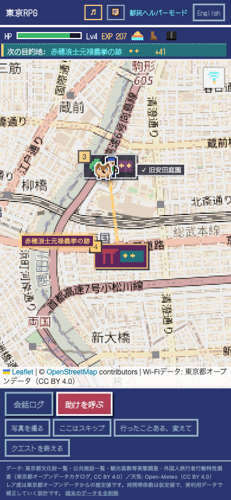
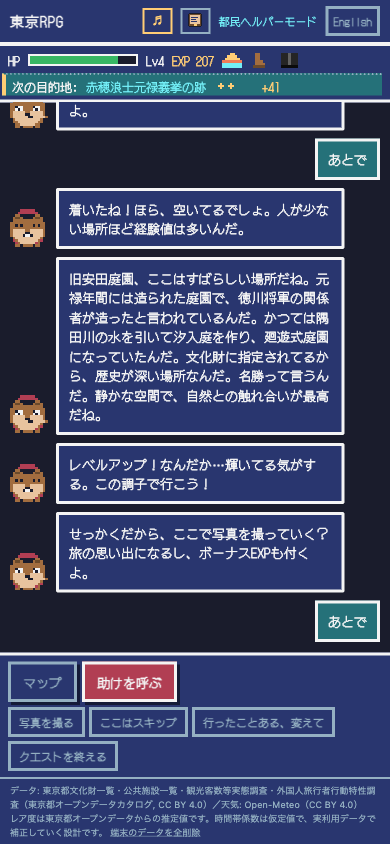
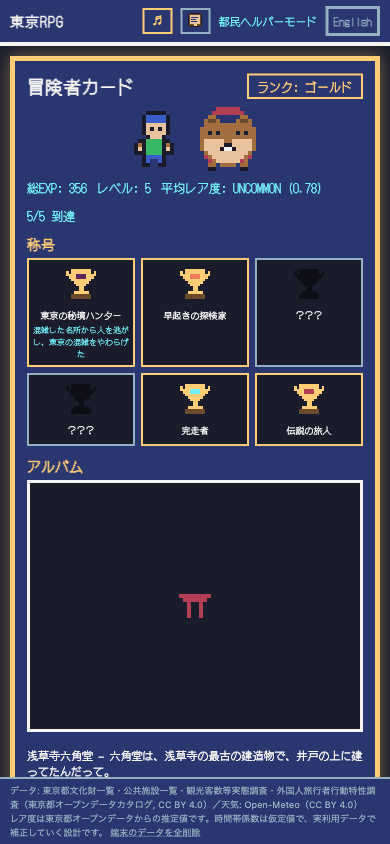
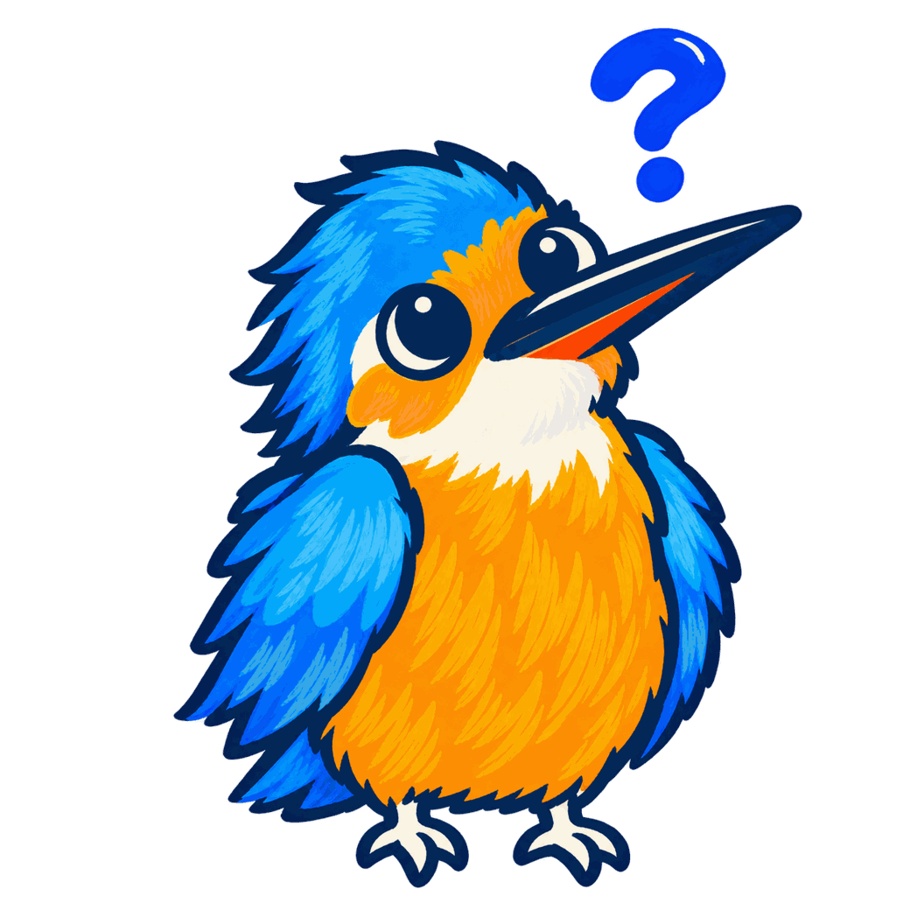
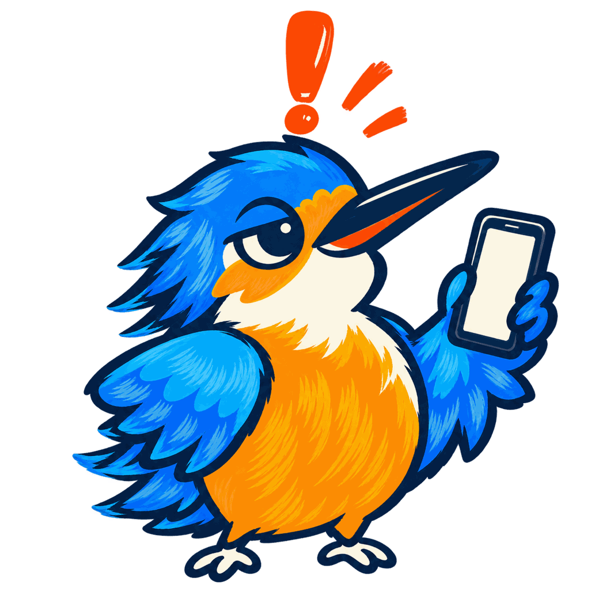
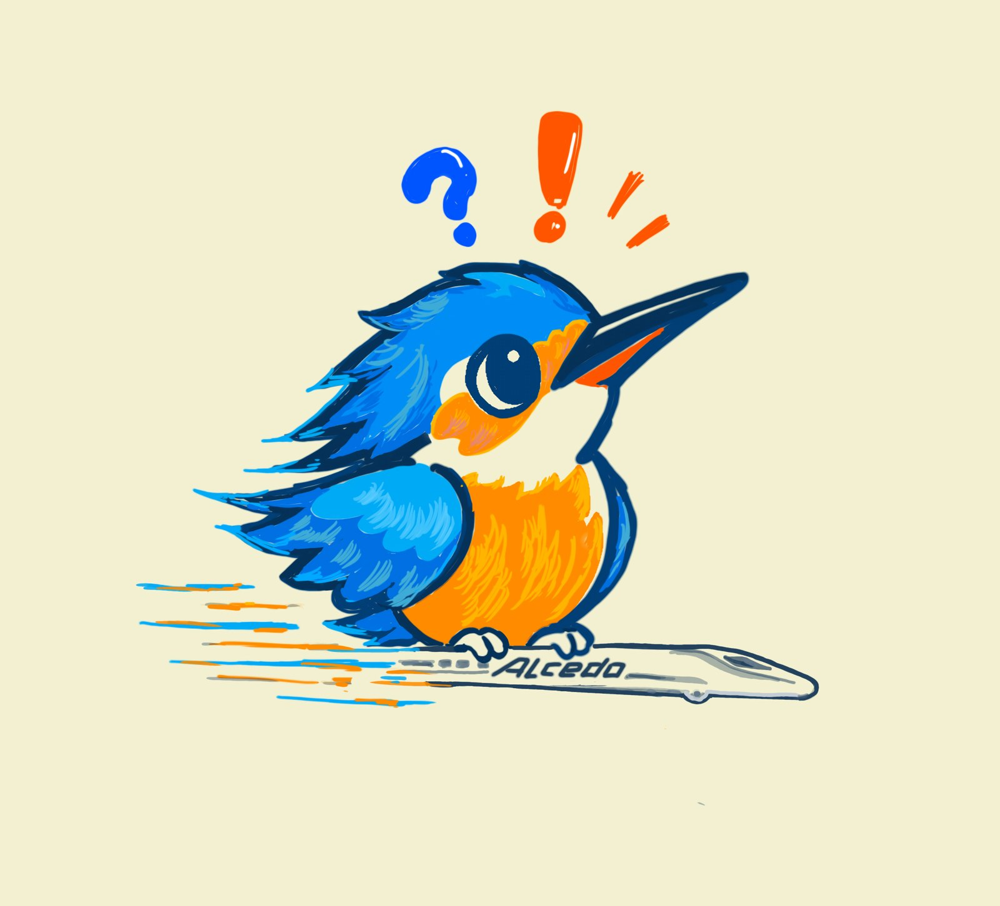
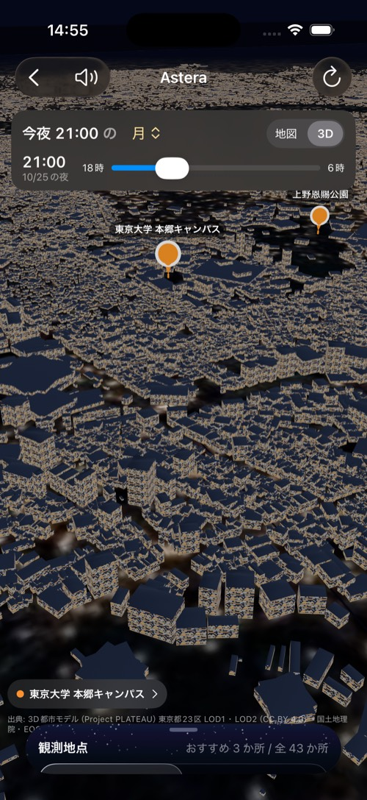
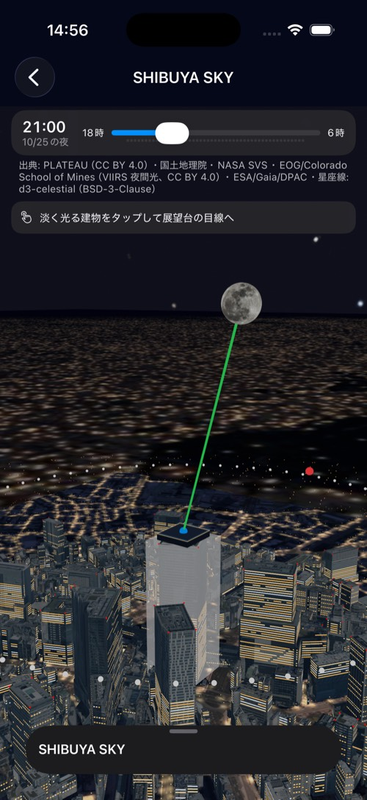
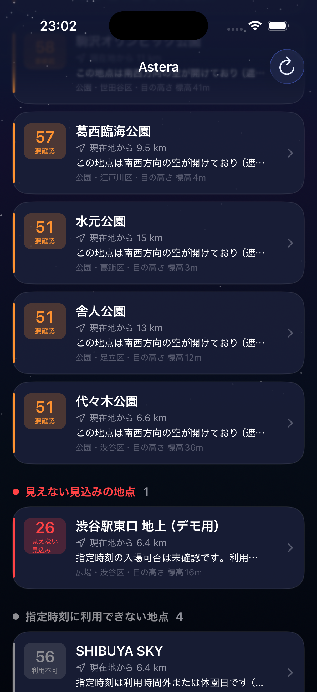

東京RPG
空いている場所ほど、レアになる。
東京都のオープンデータから混雑スコアを算出し、ゲームの「レア度」に変換する。外国人旅行者が、ドット絵の NPC と二人旅をしながら、空いている場所と時間へ自分から向かうクエスト型の観光アプリ。
TypeScript / Vite / Leaflet / Cloudflare Workers + D1 + Workers AI / PWA
ALCEDO — HACKATHON TEAM FROM KEIO SCI-TECH
多様な知恵と、新幹線級の開発スピード。慶應理工発のハッカソンチーム、Alcedo。


都知事杯オープンデータ・ハッカソン 2026 ファイナリスト
JPHACKS 2026 Hack Day Audience Award
ABOUT
Alcedo は、カワセミの学名です。慶應義塾大学矢上キャンパスのすぐそばを、新幹線が走っています。その先頭形状は、水しぶきをほとんど立てずに水へ飛び込むカワセミのくちばしをヒントに設計されました。空気の壁を静かに突き抜けることで、新幹線はより速く走れるようになりました。カワセミの形が新幹線を速くしたように、私たちも速く作る。チーム名には、その意味を込めています。
「こういうアプリ、ないの？」と、まず首をかしげる。
次の瞬間には作っている。東京RPG は、要件定義から First Stage 提出まで6日。
5人全員が開発する。企画もデザインも、作る人が自分でやる。理工学部の同期5人で同時に走る。

WORKS



空いている場所ほど、レアになる。
東京都のオープンデータから混雑スコアを算出し、ゲームの「レア度」に変換する。外国人旅行者が、ドット絵の NPC と二人旅をしながら、空いている場所と時間へ自分から向かうクエスト型の観光アプリ。
TypeScript / Vite / Leaflet / Cloudflare Workers + D1 + Workers AI / PWA



今夜、どこへ行けば、どんな星空が見えるのか。
観測者の目の高さ、PLATEAU の 3D 都市モデル、天体の位置計算を組み合わせ、「この場所・この時刻に、その天体が建物に隠れず見えるか」を計算して、東京23区の観測地点を推薦する iPhone アプリ。地上では月がビルに隠れ、展望台では見える、を 3D で示す。
Swift / SwiftUI / RealityKit / MapKit / PLATEAU / Open-Meteo / VIIRS
MEMBERS
慶應義塾大学 理工学部の同期5人。全員が開発する。
JOURNEY